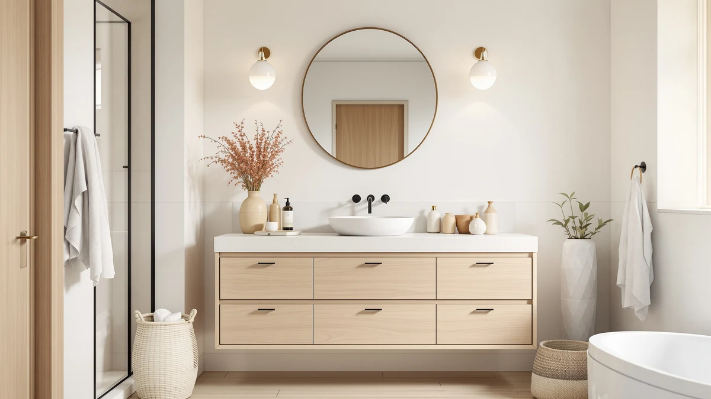

The Best Pre-assembled Vanity Tops (2026)
Prices and picks verified as of August 2026. Independent, reader-supported reviews.


Quick Answer
The best pre-assembled vanity tops save you the weekend most flat-pack furniture demands, arriving ready to set on your cabinet instead of a box of hardware and an instruction sheet. Our top pick, the ARS Concepts 60" Pre-Assembled Bathroom, gives you a wide, ready-to-install top for a two-sink layout. If your bathroom is smaller or your budget is tighter, the Elysionix 24" Single Bathroom Vanity at $239.90 covers a single-sink footprint without the assembly work either.
Our pick: ARS Concepts 60" Pre-Assembled Bathroom — $1,027.26 Check Price on Amazon
Bottom line: our top pick is the ARS Concepts 60" Pre-Assembled Bathroom Vanity with Sink at $1. The best budget option is the DELUXE LIVING 48 Inch Walnut Bathroom Vanity with Sink at $1.
Things to Know Before You Buy
- Our pick for most bathrooms is the ARS Concepts 60" Pre-Assembled Bathroom ($1,027.26). It's the widest top in this guide and arrives fully built, so it skips the assembly step entirely.
- "Pre-assembled" and "RTA" are not the same thing. Five of the seven vanities here ship pre-built. Two, the Design House Brookings Shaker and the Design House Brookings 48 Inch, are RTA and require you to build the cabinet yourself.
- Match the width to your cabinet before you buy. Our picks run from 24 inches (Elysionix) up to 60 inches (ARS Concepts), so measure your existing footprint rather than guessing from a photo.
- Assembly work is where the savings live. The cheapest RTA option here, the Design House Brookings Shaker at $268.63, costs less than a third of our top pick because you supply the labor.
We compared the best pre-assembled vanity tops on the market to find out which ones actually skip the assembly step and which only pretend to. A pre-assembled vanity top ships built, with the cabinet joined, the drawers hung, and the countertop already seated on top, so you carry it into the bathroom, hook up the plumbing, and you're finished. That distinction matters because plenty of listings blur the line between "pre-assembled" and "some assembly required," and the gap can cost you an entire Saturday.
This guide covers seven vanity tops ranging from $239.90 to $1,129.99, spanning ARS Concepts, DELUXE LIVING, Elysionix, CozyHommie, and Design House. Five ship pre-assembled. Two, both from Design House, are RTA units we included so you can weigh the price gap against the hours you'd spend with a screwdriver. Sizes run from a compact 24 inches up to a 60-inch model built for a wider single-sink or small double-sink layout.
Among the best pre-assembled vanity tops we compared, the ARS Concepts 60" Pre-Assembled Bathroom stood out for its size and finished construction, and it's the pick we'd point most buyers toward. If you want the same no-assembly convenience in a smaller footprint, the DELUXE LIVING 42 Inch Bathroom is the closest runner-up, and the Elysionix 24" Single Bathroom Vanity is there for a tight budget or a small bathroom.
Why You Should Trust Us
Best Bathroom Vanities covers one category closely: vanities, vanity tops, and the cabinets underneath them. We spend our time reading through product specs, owner reviews, and manufacturer listings for pre-assembled vanity tops, RTA vanities, and everything in between, then write up which ones deliver what they promise. We don't run a paid testing lab or invent expert quotes. We compare the facts each listing gives us, from stated dimensions to material claims, and flag where a "pre-assembled" label doesn't match what actually ships in the box.
Author Ilane Tall has covered bathroom vanities and cabinetry for this site since 2024, tracking how brands like ARS Concepts, DELUXE LIVING, and Design House price and market their pre-assembled and RTA lines. Every pick in this guide is cross-checked against its own listed price, material, and size before it earns a spot here.
How We Picked
We started by defining what "pre-assembled" has to mean to earn a place in this guide: the cabinet arrives built, the drawers are already hung, and the countertop is attached, with no cam locks or wood dowels involved. From there we looked at listings across a range of widths and price points, since a single 24-inch vanity and a wide 60-inch double-sink layout solve different problems.
We also kept two RTA (ready-to-assemble) vanity tops from Design House in the mix on purpose. They aren't pre-assembled, but they sit at a lower price than everything else here, and comparing them side by side with the fully built options shows you exactly what the convenience of skipping assembly costs. We left out listings with vague size descriptions or no stated material, since those are the details that matter most when a vanity top has to fit an existing cabinet.
How We Compared
Testing a pre-assembled vanity top starts with the listing itself: does the price match what similar sizes and materials cost elsewhere, and does the stated width line up with what a typical single-sink or double-sink cabinet needs? We checked each product's dimensions against its category (single vanity, double-width top, or RTA cabinet) to make sure buyers wouldn't be surprised by the footprint after unboxing.
We then weighed price against what you get for it. A vanity top that costs four times as much as the cheapest RTA option in this guide needs to justify that gap with size, finish, or the labor it saves you, not just brand name. Where a product's construction or size wasn't clearly stated, we noted that as a limitation rather than filling in a guess. Prices reflect what was listed when we wrote this; check the current price before you buy, since Amazon pricing shifts.
Our Picks

ARS Concepts 60" Pre-Assembled Bathroom
What we like
- Ships fully pre-assembled, no cam locks or dowels to fit
- 60-inch width covers a generous single-sink or small double-sink layout
- Countertop arrives already seated on the cabinet
- Widest option in this guide
- No RTA instructions to work through before you can use it
Flaws but not dealbreakers
- Priced nearly twice the cheapest RTA option in this guide
- Exact depth and height aren't listed, so confirm measurements before you buy
- Its size makes it a poor fit for small bathrooms
| Material | MDF / engineered wood |
| Size | — |
The ARS Concepts 60" Pre-Assembled Bathroom is the vanity top we'd point most people toward if their bathroom has the floor space for it. At 60 inches wide, it's built for a generous single-sink layout or a small double-sink setup, and unlike the two RTA options later in this guide, it arrives with the cabinet already built and the countertop already attached. You unbox it, get it into position, and connect the plumbing. There's no cam-lock hardware, no wood dowels, and no instruction booklet to work through before your bathroom is usable again.
At $1,027.26, it's the most expensive vanity top in this comparison, and that price mostly buys you size and the labor you don't have to do yourself. ARS Concepts doesn't publish exact depth and height figures for this listing, so measure your available wall space carefully and confirm the specifics with the seller before ordering, especially in a smaller bathroom. For anyone renovating a primary bathroom who wants the vanity handled in one delivery instead of an assembly project, this is the pick that gets you there fastest.

DELUXE LIVING 42 Inch Bathroom
What we like
- Ships pre-assembled like our top pick
- 42-inch width fits a standard single-sink vanity cabinet
- $38 cheaper than the ARS Concepts
- Straightforward drop-in installation, no RTA hardware
Flaws but not dealbreakers
- Still a four-figure price for a single vanity top
- 18 inches narrower than our top pick, so it won't suit a double-sink layout
- Depth and height aren't listed for this specific model
| Material | MDF / engineered wood |
| Size | 42 Inch |
The DELUXE LIVING 42 Inch Bathroom is the closest alternative to our top pick if you want the same no-assembly convenience without going as wide. It ships the same way the ARS Concepts does: cabinet built, drawers hung, countertop attached, ready to position and plumb in. At 42 inches, it fits the width of a standard single-sink vanity cabinet in most American bathrooms, narrower than the ARS Concepts but still leaving real counter space on either side of the sink.
At $989.99, it undercuts the ARS Concepts by about $38, which isn't a large gap given both are pre-assembled and made from the same MDF and engineered wood construction. Choose this one if 60 inches is more width than your bathroom can use, since a top that overhangs a cabinet or crowds a doorway causes more problems than it solves. Like our top pick, DELUXE LIVING doesn't publish full depth and height specs for this listing, so confirm exact measurements against your cabinet before you order.

DELUXE LIVING 48 Inch Walnut
What we like
- Ships pre-assembled, same as the rest of the DELUXE LIVING line
- 48-inch width splits the difference between the 42-inch and 60-inch options
- Walnut finish gives it a warmer look than a plain white or gray top
Flaws but not dealbreakers
- Most expensive vanity top in this guide, even ahead of the 60-inch ARS Concepts
- 12 inches narrower than the ARS Concepts despite the higher price
- Depth and height aren't listed, same caveat as the other DELUXE LIVING sizes
| Material | MDF / engineered wood |
| Size | 48 Inch |
The DELUXE LIVING 48 Inch Walnut sits between the brand's 42-inch model and the ARS Concepts 60-inch top, both in size and in what it's trying to solve. At 48 inches, it gives you noticeably more counter space than the 42-inch version without committing to a full 60-inch footprint, and the walnut finish stands out against the more neutral tones on the rest of this list. Like the other DELUXE LIVING listing, it ships pre-assembled, so installation is the same drop-in process.
The catch is price. At $1,129.99, it's actually the most expensive vanity top in this comparison, more than the 60-inch ARS Concepts despite offering 12 fewer inches of width. You're paying for the walnut finish and the mid-size footprint, not for extra size. If matching a specific wood tone in your bathroom matters more to you than maximizing width, that premium can make sense. If size is your main priority, the ARS Concepts gives you more vanity for less money.

Elysionix 24" Single Bathroom Vanity
What we like
- Lowest price of any vanity top in this guide by a wide margin
- 24-inch width fits small bathrooms and powder rooms
- Still ships pre-assembled despite the budget price
- Compact footprint makes it easy to carry and install without help
Flaws but not dealbreakers
- Too small for anyone who wants generous counter space
- Not a fit for double-sink layouts
- Narrower cabinet limits storage compared to the 42-inch and 48-inch models
| Material | MDF / engineered wood |
| Size | 24 Inch |
The Elysionix 24" Single Bathroom Vanity is the budget pick here, and it earns that spot by being both the smallest and the cheapest vanity top in this guide, without dropping the pre-assembled construction that makes the pricier options convenient. At 24 inches, it's built for a small bathroom, a powder room, or a secondary bath where floor space is tight. You're not getting the counter space of the 42-inch or 48-inch models, but you're also not paying anywhere near their price.
At $239.90, it costs a fraction of the ARS Concepts top pick, and roughly a quarter of what the DELUXE LIVING 48 Inch Walnut runs. That price gap makes sense given the size difference, but it also means this is the easiest vanity top on this list to justify for a guest bathroom or a rental property where you don't need a large footprint. Its compact size also makes it easier for one person to carry and set in place without help, which the larger 48-inch and 60-inch tops don't offer.

CozyHommie Solid Wood RTA Bathroom
What we like
- Full dimensions listed (42" W x 21" D x 34-1/2" H), unlike several pre-assembled tops here
- Priced roughly half of the ARS Concepts top pick
- Listed as RTA, so you know what to expect before delivery
Flaws but not dealbreakers
- Requires assembly, unlike the five pre-assembled tops in this guide
- Listed material is MDF and engineered wood despite the "Solid Wood" name
- 42-inch width won't suit a double-sink layout
| Material | MDF / engineered wood |
| Size | 42" Width x 21" Depth x 34-1/2" Height |
The CozyHommie Solid Wood RTA Bathroom is the one listing in this guide that tells you exactly what dimensions you're getting: 42 inches wide, 21 inches deep, and 34-1/2 inches tall. That's more detail than several of the pre-assembled tops here provide, which matters if you're trying to fit a vanity into a tight footprint. The trade-off is in the name: this one is RTA, so you assemble the cabinet yourself rather than unboxing something finished.
At $539.99, it lands roughly halfway between the Elysionix budget pick and the DELUXE LIVING 42-inch model, positioning it as a middle option if you're willing to spend an afternoon assembling in exchange for real savings over the pre-assembled tops. Despite the "Solid Wood" name, its listed construction is MDF and engineered wood, the same material category as the rest of this guide, so don't expect a different build material just because of the branding. Buy it for the confirmed dimensions and the RTA savings, not for a wood-species upgrade.

Design House Brookings Shaker Unassembled
What we like
- Lowest price of any Design House listing in this guide
- Shaker-style design fits a traditional bathroom look
- 33-inch width suits a compact single-sink layout
Flaws but not dealbreakers
- Ships unassembled, the opposite of what most of this guide covers
- Requires tools and time before it's usable
- Narrower than most of the pre-assembled options here
| Material | MDF / engineered wood |
| Size | 33 in. Wide |
The Design House Brookings Shaker Unassembled is exactly what its name says: a Shaker-style vanity that arrives unassembled, not pre-built like the ARS Concepts, DELUXE LIVING, or Elysionix listings above. We included it because at $268.63, it's the cheapest way into this guide, and it gives you a clear price comparison for what you're paying extra for when you choose a pre-assembled top instead.
At 33 inches wide, it suits a compact single-sink bathroom, similar in scale to the Elysionix budget pick but in a traditional Shaker style rather than a modern one. If your priority is matching a specific cabinet look on a tight budget, and you're comfortable spending a few hours with basic tools, this is a reasonable way to get there. If you specifically want to avoid assembly, this is the one listing in this guide to skip in favor of the pre-built options.

Design House Brookings 48 Inch
What we like
- 48-inch width matches the DELUXE LIVING Walnut top at a lower price
- Full footprint listed (48" x 21.73"), useful for confirming fit
- Costs about $384 less than the pre-assembled 48-inch DELUXE LIVING option
Flaws but not dealbreakers
- RTA construction means assembly before it's usable
- No finish name given beyond the size, unlike the Walnut model
- Still costlier than the smaller Brookings Shaker
| Material | MDF / engineered wood |
| Size | 48 x 21.73 RTA |
The Design House Brookings 48 Inch is the RTA counterpart to the DELUXE LIVING 48 Inch Walnut, giving you the same 48-inch width for less money if you're willing to assemble it yourself. Its listing includes the full footprint, 48 inches by 21.73 inches, which is more specific than some of the pre-assembled tops in this guide that leave depth unlisted.
At $745.76, it costs about $384 less than the pre-assembled DELUXE LIVING Walnut at the same width, a meaningful gap if 48 inches is the size your bathroom needs. It's also more expensive than the smaller Brookings Shaker, since a larger RTA cabinet still means more material and hardware even before assembly. Choose this one if you've measured for a 48-inch footprint and would rather save several hundred dollars than avoid a Saturday of assembly work.
Quick Comparison
| Product | Material | Price | Rating | Best for | Get it |
|---|---|---|---|---|---|
| ARS Concepts 60" Pre-Assembled Bathroom | MDF / engineered wood | $1,027.26 | 4 | Wide bathrooms, zero assembly | View on Amazon → |
| DELUXE LIVING 42 Inch Bathroom | MDF / engineered wood | $989.99 | 4 | Standard single-sink width, pre-assembled | View on Amazon → |
| DELUXE LIVING 48 Inch Walnut | MDF / engineered wood | $1,129.99 | 4 | Walnut finish, mid-size width | View on Amazon → |
| Elysionix 24" Single Bathroom Vanity | MDF / engineered wood | $239.90 | 4 | Small bathrooms, lowest price | View on Amazon → |
| CozyHommie Solid Wood RTA Bathroom | MDF / engineered wood | $539.99 | 4 | Full dimensions listed, RTA savings | View on Amazon → |
| Design House Brookings Shaker Unassembled | MDF / engineered wood | $268.63 | 4 | Cheapest option, requires assembly | View on Amazon → |
| Design House Brookings 48 Inch | MDF / engineered wood | $745.76 | 4 | 48-inch width, RTA savings | View on Amazon → |
What does "pre-assembled" actually mean for a vanity top?
A pre-assembled vanity top arrives built and ready to set on your cabinet, so you skip the screws, cam locks, and instruction booklet that come with flat-pack furniture.
Are pre-assembled vanity tops worth the extra cost over RTA options?
It depends on how much your time is worth and how much you trust a weekend of assembly.
The Competition
A few vanity tops in this guide are worth owning but don't beat our top picks among the best pre-assembled vanity tops we compared, either because they cost more for less, or because they trade the convenience this guide is built around for a lower price.
The DELUXE LIVING 48 Inch Walnut ($1,129.99) is the most expensive top here, and it costs more than the wider ARS Concepts 60" despite offering 12 fewer inches of counter space. It's a fine choice if the walnut finish is the specific look you want, but it doesn't win on size or price against our top pick.
The two Design House listings, the Brookings Shaker Unassembled ($268.63) and the Brookings 48 Inch ($745.76), are both RTA rather than pre-assembled, so they sit outside the main premise of this guide. We kept them in for comparison because they show what you save by taking on the assembly yourself, but if the entire point of your search is skipping that work, they're not the right buy. The same logic applies to the CozyHommie Solid Wood RTA Bathroom ($539.99): it has the most precise published dimensions of anything on this page, but it still requires assembly, which knocks it out of contention against the fully built options.
Frequently Asked Questions
What does "pre-assembled" actually mean for a vanity top?
A pre-assembled vanity top arrives built and ready to set on your cabinet, so you skip the screws, cam locks, and instruction booklet that come with flat-pack furniture. Not every option in this guide ships that way. The Design House Brookings Shaker and the Design House Brookings 48 Inch are RTA (ready-to-assemble), so you build the cabinet before the top goes on. We included both types so you can compare the time savings of a pre-assembled unit against the lower price of an RTA one.
Are pre-assembled vanity tops worth the extra cost over RTA options?
It depends on how much your time is worth and how much you trust a weekend of assembly. Our pre-assembled pick, the ARS Concepts 60" at $1,027.26, costs almost twice as much as the CozyHommie Solid Wood RTA Bathroom at $539.99, and roughly four times the Design House Brookings Shaker RTA at $268.63. You're paying for the labor and the assurance that joints, drawers, and the countertop seam were finished at the factory instead of in your bathroom. If your budget is tight and you don't mind a few hours with a screwdriver, an RTA option gets you a similar footprint for less money.
How do I make sure a vanity top will fit my existing cabinet?
Measure the width of your cabinet's top edge before you buy, then match it to the vanity's stated width rather than eyeballing it from a product photo. Our picks span a range of widths, from the 24-inch Elysionix up to the 48-inch DELUXE LIVING Walnut and the 60-inch ARS Concepts, so there's room to match most single-sink and small double-sink layouts. Also check depth. A top that overhangs the cabinet by more than an inch or two on either side will look off and can crack under pressure if it isn't fully supported.